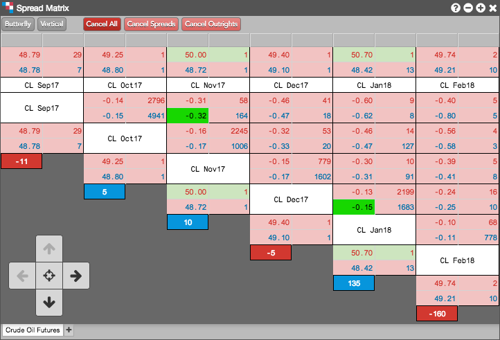

The Spread Matrix provides you the ability to view market data for multiple instruments and the spreads between those outright instruments. Use the Spread Matrix to view market data and quickly enter orders for all contract expirations of a product in a single screen. By using the Spread Matrix and a floating order entry window for active spread trading, you can trade all outrights and Calendar spreads, as well as Butterfly and Condor spreads for a single product.
You can also use Spread Matrix to display and view market data for the instruments of two different products and their associated spreads. From an inter-product Spread Matrix, you can dynamically create synthetic spreads and trade them with Autospreader®.
The Spread Matrix displays outright contracts across the top and diagonally. The spreads are displayed in the middle of the Spread Matrix where the various outright contracts intersect.
